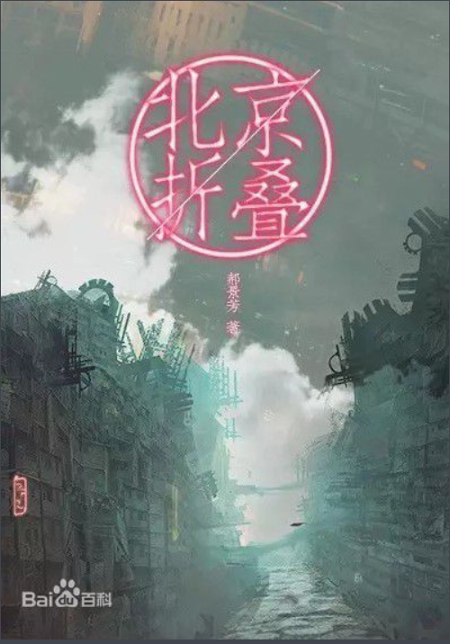

《北京折叠》是郝景芳在2012年年底完成的，初稿只用3天时间就写完了，最初发表于论坛水木社区的文化人文区中的科学幻想区。 谈到《北京折叠》，郝景芳曾透露，创作的契机就是生活所见。她曾经租住在北京北五环外的城乡结合部。楼下就是嘈杂的小巷子、小饭馆和大市场。郝景芳想，“有一些人是可以藏起来的，藏在看不见的空间。然后再几个小时后又进入另一个世界。我会觉得北京是几个不同空间叠加在一起，就进行了更夸张的衍伸。”有了这样的想法，她创作出了《北京折叠》。

希望大家喜欢《北京折叠》这本小说！！！
《北京折叠》是科幻作家郝景芳创作的中篇小说，收录在小说集《孤独深处》中。 首次发表于2012年12月。
该小说讲述北京在未来按照社会阶层被分成三个空间，生活在第三空间的垃圾工老刀，为了让自己的养女可以接受教育，冒着生命危险穿梭在三个空间之中为人送信。在此过程中，他看到了上层嫁入豪门的年轻女性对中层依靠读书改变命运的年轻大学生的玩弄，也被从第三空间奋斗到第一空间的好心人出手相救，在历经艰险之后终于回到第三空间。
《北京折叠》中设定了三个互相折叠的世界，隐喻上流、中产和底层三个阶层。整个城市尺度的空间和时间双重折叠意象恢弘，映射出当代社会中人们对于阶层割裂趋势的深切焦虑。
2016年8月21日，《北京折叠》获得第74届雨果奖最佳中短篇小说奖。

评分：

内容简介
创作背景
人物介绍
艺术特色
大地的一面是第一空间，五百万人口，生存时间是从清晨六点到第二天清晨六点。空间休眠，大地翻转。翻转后的另一面是第二空间和第三空间。第二空间生活着两千五百万人口，生存时间是从次日清晨六点到夜晚十点，第三空间生活着五千万人，生存时间是从十点到清晨六点，然后回到第一空间。时间经过了精心规划和最优分配，小心翼翼隔离，五百万人享用二十四小时，七千五百万人享用另外二十四小时。在第三空间，垃圾工老刀一顿早饭要花一百元，老刀一个月工资一万元，而他希望能让自己捡来的孩子糖糖，上一月一万五学费的幼儿园，为了这个花费，他宁愿冒险去其他空间送信
老刀
老刀在城市模型中的命运因“大地不仁”的上帝视角，被笼罩了一层生命存在的悲观主义，这也是千万普通人共同的悲伤所在。倘若此前的快乐是因蒙蔽而无知无虑，那么意识到自身终将泯灭于历史浪潮后，依然不自弃的努力正是生命的坚强所在。
其他人物
第二空间的研究生秦天准备毕业就去申请联合国新青年项目，如果能入选，就能去第一空间工作； 第一空间的阔太太依言在一家银行担任总裁助理，不是为挣钱，是为了消遣时间，她每天只工作半天，拿半薪，其余的时间自己安排，可以学一些东西。第一空间像她这样的太太很多，半职工作也很多。中午她下了班，下午会有另一个太太去做助理。
《北京折叠》的笔触踏实淡定。一般的反乌托邦小说，情节基本是上层压榨下层，下层在隐忍中酝酿反抗，直至冲突爆发，下层终于推翻上层或是被上层镇压。但郝景芳却以去戏剧化的方式，在平铺直叙中娓娓道来，只为了向读者展示她眼前的这座城。
这个被人为区隔的三层空间里并没有激烈的冲突，老刀为了给人送信，从第三空间到了第二空间，又来到了第一空间，之后带着第一空间的回信又回去了。没有生死抉择，也没有天人交战，好几次在老刀即将有可能面临危机或波折的时候，之后的剧情却又波澜不惊地滑过去了。老刀路过的、看到的，都是平凡的人、事、物，但这种平凡反而营造出了最贴近真实的氛围。正因为情节的平淡和作者的克制，读者才不会被戏剧冲突吸引过多注意力，更能纯粹地体味这个社会带给人的感受，真实得令人胆寒。这种真实感，正是《北京折叠》吸引人的首要因素。
除了真实以外，还值得注意的是《北京折叠》中对人的描写。郝景芳在《北京折叠》中没有设置任何一个所谓的“反派”，“第三空间”的老刀在“第一空间”和“第二空间”之间穿梭，遇到的人对他都比较友好，没有发生什么残忍的事情。跟情节的平淡相匹配，故事里个体的人并不邪恶或残酷，但整个折叠北京的设定，连空间和时间都是不平等的，其实又异常残酷。这样一种反差，也是《北京折叠》令人玩味之处。
点我返回顶部